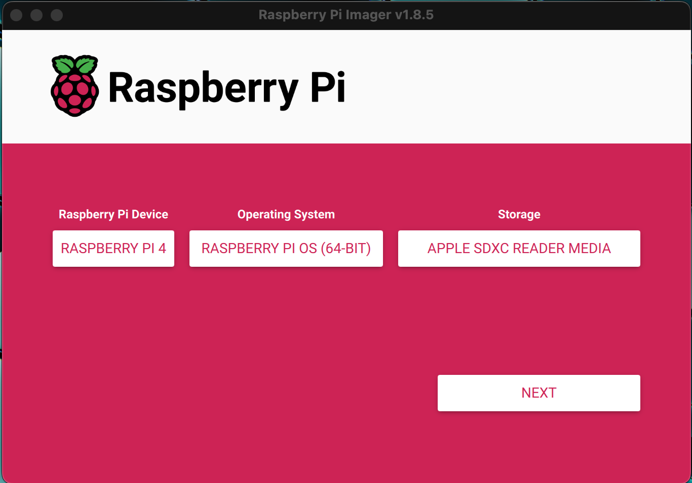
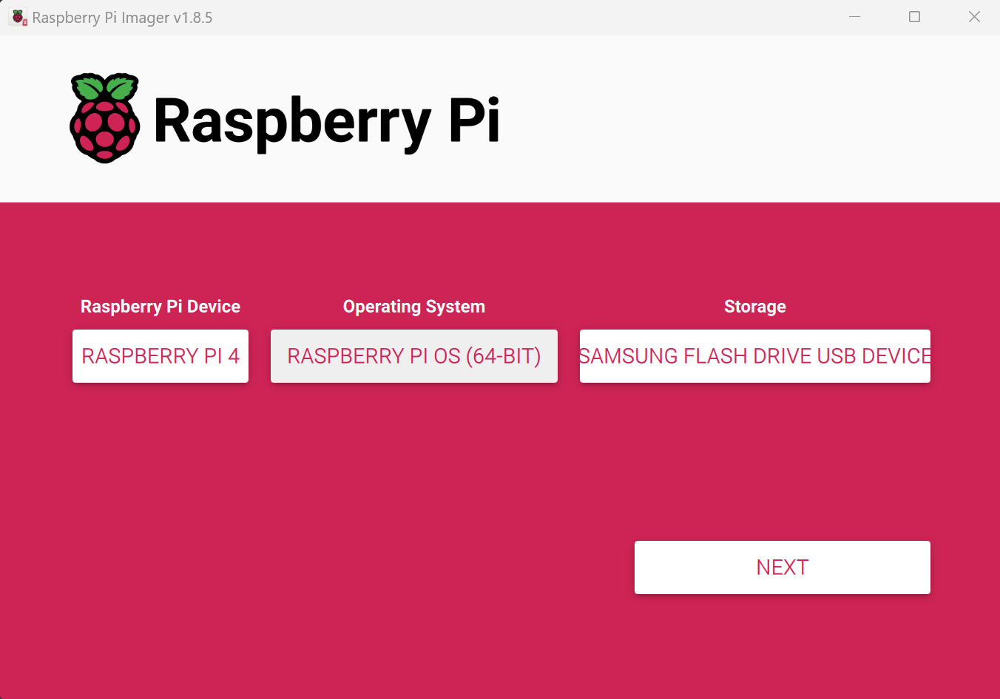

📋 Overview & Setup
This guide walks you through building a robust, multi-sensor demo system using a Raspberry Pi 4B running Raspberry Pi OS. Each component is tested individually and then combined into one working system. This document is written to be accessible for beginners, complete with fallback advice and troubleshooting context.
Hardware Components
- Ultrasonic Sensor (HC-SR04)
- LCD Display (1602 Parallel)
- ArduCam Camera Module (IMX708 with PiCamera2)
You’ll learn:
- GPIO wiring and hardware setup
- Library installation
- Full commented Python scripts
- How to use the terminal for testing
- How to troubleshoot common issues
🍓 Raspberry Pi Setup
📦 What You Need
- Raspberry Pi 4B (or 3B+)
- MicroSD Card (16GB or more, Class 10 recommended)
- MicroSD Card Reader
- Power Supply (5V 3A)
- HDMI Monitor, USB Keyboard and Mouse (for first-time setup)
🖥️ Step 1: Install Raspberry Pi OS
- Download and install Raspberry Pi Imager on your PC.
- Insert the SD card into your reader.
- Launch the Imager, select:
- OS: Raspberry Pi OS (64-bit)
- Storage: Your SD card
- Click "Next", enable SSH (if offered), and set username/password.
- Click "Write" and wait for it to finish.
⚠️ OS Customization Warning
After you click Next or Write, you may see a pop-up like this:

When this screen appears, click the NO button.
Do not apply OS customization unless you're preconfiguring advanced settings.
🖼️ Raspberry Pi Imager Screenshots
macOS
Windows
⚙️ Step 2: First Boot Setup
- Insert SD card into the Pi and power it on.
- Follow the on-screen wizard to set up Wi-Fi and localization.
- Open Terminal and run system updates:
sudo apt update
sudo apt upgrade -y
sudo reboot🔧 Part 3: Remote Access & Development Setup
📅 Step 1: Download and Install VS Code
- Go to Visual Studio Code and download the version for your OS (Windows, macOS, or Linux).
- Install it using the standard installer.
- Launch VS Code and open the Extensions tab (left sidebar).
- Search for and install the extension called "Remote - SSH".
🌐 Step 2: Set Up Remote Access Options
🖥️ Option A: Tailscale
Tailscale is a secure mesh VPN that connects your devices together into a private network using WireGuard.
💻 On Your Computer:
- Visit tailscale.com/download and install Tailscale.
- Sign in using GitHub, Google, or Microsoft account.
- Click "Enable Tailscale" to activate the virtual network.
🍓 On Your Raspberry Pi:
curl -fsSL https://tailscale.com/install.sh | sh
sudo tailscale upLog in via browser when prompted. The Pi will appear in your Tailscale dashboard with a private IP (e.g., 100.101.102.103).
🌐 Option B: Raspberry Pi Connect
Raspberry Pi Connect offers browser-based GUI and terminal access. Ideal for light remote control.
- Visit connect.raspberrypi.com/devices.
- Log into your Raspberry Pi account.
- Register your Pi using Raspberry Pi Imager or by installing the Connect package.
- Once linked, you can access your Pi's desktop or terminal directly in your browser.
🔐 Step 3: Connect via VS Code (SSH)
- In VS Code, press Cmd/Ctrl + Shift + P.
- Select Remote-SSH: Connect to Host.
- Enter the Pi's Tailscale IP like:
pi@100.101.102.103 - Authenticate with your Pi's password.
- You're now working directly on the Pi through VS Code with full file system access.
🤺 Which Should You Use?
- Need to write or edit code (Python, HTML, etc.)
- Want terminal + Git + live development tools
- Prefer using an IDE over a browser
- Need quick GUI access from any device
- Don't want to install VS Code or set up SSH
- Are supporting users who just need to check or reboot the Pi remotely
Pro Tip: You can use both! Use Connect for quick GUI tweaks, and Tailscale+SSH for serious development work.
📏 Ultrasonic Sensor (HC-SR04)
The HC-SR04 is an ultrasonic distance sensor that uses sound waves to measure distance. It sends a 40 kHz pulse via the TRIG pin and listens for the echo using the ECHO pin.
Distance is computed using the time delay of the echo using:
distance (cm) = time (seconds) × 17150- TRIG: Sends 10μs pulse to start measurement
- ECHO: Returns HIGH for the time it takes the sound to bounce back
📉 Voltage Divider Requirement
The HC-SR04’s ECHO pin outputs 5V, but the Raspberry Pi GPIO expects 3.3V max.
A voltage divider with two resistors safely drops the 5V to ~3.3V to protect the Pi.
Voltage Divider Formula:
Vout = Vin × (R2 / (R1 + R2))- Vin = 5V (ECHO signal)
- R1 = 2kΩ (connected between ECHO and Pi input)
- R2 = 1kΩ (connected between Pi input and GND)
Calculation:
Vout = 5V × (1k / (2k + 1k)) = 5V × (1/3) ≈ 1.67V
This math is backwards. To get 3.3V from 5V:
Use R1 = 1kΩ, R2 = 2kΩ → Vout = 5V × (2 / (1 + 2)) = 5V × 0.666 = 3.33V ✅
🧰 Breadboard Wiring Example
🔁 Version 1: Single Reading (No Averaging)
🧪 Show Code
import RPi.GPIO as GPIO
import time
TRIG = 5
ECHO = 6
GPIO.setmode(GPIO.BCM)
GPIO.setwarnings(False)
GPIO.setup(TRIG, GPIO.OUT)
GPIO.setup(ECHO, GPIO.IN)
def get_distance():
GPIO.output(TRIG, True)
time.sleep(0.00001)
GPIO.output(TRIG, False)
while GPIO.input(ECHO) == 0:
pulse_start = time.time()
while GPIO.input(ECHO) == 1:
pulse_end = time.time()
return round((pulse_end - pulse_start) * 17150, 2)
try:
while True:
print(f"Distance: {get_distance()} cm")
time.sleep(1)
except KeyboardInterrupt:
GPIO.cleanup()📊 Version 2: Averaged Readings
📈 Show Averaging Code
import RPi.GPIO as GPIO
import time
TRIG = 23
ECHO = 24
GPIO.setmode(GPIO.BCM)
GPIO.setwarnings(False)
GPIO.setup(TRIG, GPIO.OUT)
GPIO.setup(ECHO, GPIO.IN)
def get_distance():
GPIO.output(TRIG, True)
time.sleep(0.00001)
GPIO.output(TRIG, False)
timeout = time.time() + 1
while GPIO.input(ECHO) == 0:
if time.time() > timeout:
return None
pulse_start = time.time()
timeout = time.time() + 1
while GPIO.input(ECHO) == 1:
if time.time() > timeout:
return None
pulse_end = time.time()
duration = pulse_end - pulse_start
return round(duration * 17150, 2)
def get_average_distance(samples=5, delay=0.05):
readings = []
for _ in range(samples):
dist = get_distance()
if dist is not None:
readings.append(dist)
time.sleep(delay)
return round(sum(readings) / len(readings), 2) if readings else None
try:
while True:
avg = get_average_distance()
print(f"Avg Distance: {avg} cm" if avg else "Failed to read distance")
time.sleep(1)
except KeyboardInterrupt:
GPIO.cleanup()✅ When to Use Each Version
- Version 1: For debugging or fast measurements
- Version 2: For smoother, more stable readings
📺 LCD Display (1602)
- RS → GPIO 25
- E → GPIO 24
- D4–D7 → GPIO 23, 17, 18, 22
import time
import RPi.GPIO as GPIO
from RPLCD import CharLCD
# GPIO setup
GPIO.setmode(GPIO.BCM)
GPIO.setwarnings(False)
# LCD pin config (using 4-bit mode)
lcd = CharLCD(cols=16, rows=2, pin_rs=25, pin_e=24,
pins_data=[23, 17, 18, 22],
numbering_mode=GPIO.BCM)
try:
lcd.clear()
lcd.write_string("LCD is working!")
time.sleep(2)
counter = 0
while True:
lcd.clear()
lcd.write_string(f"Count: {counter}")
counter += 1
time.sleep(1)
except KeyboardInterrupt:
lcd.clear()
GPIO.cleanup()📷 ArduCam with Picamera2
sudo apt install -y libcamera-dev libopencv-devfrom picamera2 import Picamera2
import cv2
picam2 = Picamera2()
picam2.configure(picam2.create_preview_configuration(
main={"size": (640, 480), "format": "RGB888"}))
picam2.start()
while True:
frame = picam2.capture_array()
cv2.imshow("Camera", frame)
if cv2.waitKey(1) == ord('q'):
break
picam2.stop()
cv2.destroyAllWindows()📱 Quick Access
Scan this QR code to return to the LiDAR Car Project website.